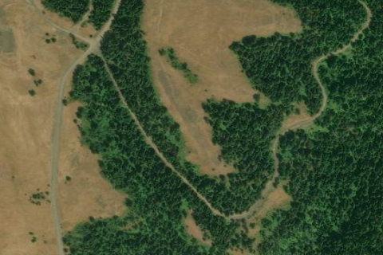

Ruckel Ridge, OR

Aerial imagery source: Esri, Vantor, Earthstar Geographics, and the GIS User Community
| CTAF | 122.9 |
|---|---|
| Coordinates | 45.62645, -118.13087 |
Notes
[shortfield] Location Overview Ruckel Junction sits within the Walla Walla Ranger District of the Umatilla National Forest at roughly 4,400 feet elevation in the rugged Blue Mountains of northeastern Oregon, not far from the Washington state border. The surrounding landscape is characteristic of the region — rolling timbered ridges, open meadows, and the kind of isolated high country that sees far more wildlife than human traffic. The nearest significant towns are Milton-Freewater and Walla Walla, Washington to the north, and Pendleton to the west. Camping & Recreation The Umatilla National Forest surrounding this area offers dispersed camping typical of national forest land, with no developed facilities expected at the strip itself. The Blue Mountains provide excellent opportunities for hunting, fishing, hiking, and wildlife watching. The broader Walla Walla Ranger District manages numerous trails and forest roads that provide access to the backcountry throughout the warmer months. Notes & Warnings The airstrip is abandoned and should be considered unserviceable. At an elevation near 4,400 feet, density altitude is a meaningful consideration in warmer months. The surrounding terrain is heavily timbered, which likely creates obstacle concerns on approach and departure. The condition of any remaining runway surface is unknown and potentially overgrown or deteriorated. No services, fuel, or communications infrastructure should be expected. History Ruckel Junction likely traces its origins to the mid-twentieth century era of Forest Service aviation activity in the Pacific Northwest, when the USFS and related agencies established numerous remote airstrips throughout the Blue Mountains and Cascades to support firefighting, timber operations, and ranger patrol. The Umatilla National Forest was heavily managed for logging during that period, and small airstrips like this one served as logistical waypoints in an era before helicopter access became dominant. As road networks expanded and aerial firefighting evolved, many of these strips fell out of regular use and were eventually abandoned, leaving behind little more than a clearing in the timber and a geographic name on a map.